측량및지형공간정보기사 (2021-09-12 기출문제)
1과목: 측지학 및 위성측위시스템
1. 거리 측량 정밀도를 1/108까지 허용할 때 지구 표면을 평면으로 고려할 수 있는 거리의 한계는? (단, 지구의 곡선반지름은 6370km로 한다.)
- 약 2km
- 약 7km
- 약 11km
- 약 22km
(정답률: 57%)

2. 중력이상에 대한 설명으로 옳지 않은 것은?
- 일반적으로 실측값과 계산식에 의한 이론적 중력값은 일치하지 않는다.
- 중력이상이 (+)이면 그 지점 부근에 무거운 물질이 있다.
- 표준 중력값에서 기준면 환산 실측 중력값을 뺀 값이다.
- 중력이상에 의해 지표면 아래의 상태를 추정할 수 있다.
(정답률: 64%)
3. 기준타원체로부터 지오이드 면까지의 수직거리를 무엇이라 하는가?
- 지오이드고
- 정표고
- 타원체고
- 동표고
(정답률: 80%)
4. 다음 중 DGPS에 의해서 보정되지 않는 오차는?
- 전리층오차
- 위성시계오차
- 사이클슬립
- 위성궤도오차
(정답률: 70%)
5. 반지름이 5000km인 구(球)에서 수평거리 10km에 대한 곡률오차는?
- 0.⑤km
- 0.04km
- 0.03km
- 0.01km
(정답률: 50%)
6. 위성의 기하학적 배치 상태가 수신기 위치의 정확도에 미치는 영향을 나타내는 척도는?
- 다중경로(Multipath)
- DOP(Dilution of Precision)
- 사이클 슬립(Cycle Slip)
- 선택적 부과오차(S/A)
(정답률: 75%)
7. GNSS 절대측위에서 HDOP와 VDOP가 2.3과 3.7이고 예상되는 관측데이터의 정확도(σ)가 ±2.5m일 때 예상할 수 있는 수평위치 정확도(σH)와 수직위치 정확도는(σV)는?
- σH=±5.74m, σV=±9.25m
- σH=±4.8m, σV=±6.20m
- σH=±1.48m, σV=±8.51m
- σH=±0.92m, σV=±1.48m
(정답률: 57%)
8. GNSS 측량에 대한 설명으로 옳지 않은 것은?
- GNSS 측량은 관측 가능한 기상 및 시간의 제약이 매우 적다.
- 도심지내 GNSS 측량에서는 다중경로에 주의해야 한다.
- GNSS 측량에서는 3차원 좌표값을 직접 얻기 때문에 안테나 높이를 관측할 필요가 없다.
- GNSS 측량에서는 수신점 간의 시통이 없어도 기선벡터를 구할 수 있으므로 시통을 염려할 필요가 없다.
(정답률: 65%)
9. 지구의 모양이 완전구체로 되어 있다면 지구의 편평률은?
- 1
- 1/100
- 1/299
- 0
(정답률: 51%)
10. 다음 중 2차원 좌표로 올바르게 짝지어진 것은?
- 원주좌표, 구면좌표
- 원ㆍ원좌표, 원ㆍ방사선좌표
- 구면좌표, 원ㆍ원좌표
- 원주좌표, 원ㆍ방사선좌표
(정답률: 50%)
11. 다음 중 GNSS 측량의 계통적 오차(정오차)에 해당하지 않는 것은?
- 위성의 시계오차
- 위성의 궤도오차
- 전리층 지연오차
- 관측 잡음오차
(정답률: 82%)
12. 다음 중 GPS 위성신호가 아닌 것은?
- L1 반송파
- E5 반송파
- P 코드
- C/A 코드
(정답률: 79%)
13. 세계 각 국에서는 보다 정확하고 시공을 초월한 측위환경에 대한 수요가 증가함에 따라 각 국 고유의 측위위성시스템(GNSS)을 개발ㆍ구축하고 있다. 이와 관련이 없는 것은?
- Galileo
- BeiDou
- SPOT
- GLONASS
(정답률: 61%)
14. 지자기 측정의 3요소로 올바르게 짝지어진 것은?
- 편각, 복각, 수평분력
- 복각, 연직각, 수평분력
- 복각, 수평각, 연직분력
- 편각, 복각, 연직분력
(정답률: 78%)
15. 관측점들의 고도차에 존재하는 물질의 인력이 중력에 미치는 영향을 보정하는 중력보정을 무엇이라 하는가?
- 지형보정
- 부게보정
- 기계보정
- 프리-에어 보정
(정답률: 74%)
16. 우리나라에서 채택하고 있는 세계측지계의 기준타원체로 옳은 것은?
- WGS72
- Bessel
- WGS84
- GRS80
(정답률: 68%)
17. GNSS 측량을 통해 수집된 공통 데이터 형식인 RINEX 파일에 해당되지 않는 것은?
- O(관측) 파일
- N(항법메시지) 파일
- M(기상) 파일
- S(측위해) 파일
(정답률: 57%)
18. 탄성파 측량에 대한 설명 중 옳지 않은 것은?
- 외핵과 내핵의 경계를 알아내기 위하여 반사법을 이용한다.
- 단층과 같은 지질 구조는 탄성파 측량에 의해 알아낼 수 있다.
- 굴절법은 지표면으로부터 낮은 곳을 대상으로 한다.
- 반사법은 지표면으로부터 깊은 곳을 대상으로 한다.
(정답률: 62%)
19. 경위도에 관한 설명으로 옳지 않은 것은?
- 본초자오면과 지표상 한점을 지나는 자오면이 만드는 적도면상 각거리를 측지경도라고 한다.
- 지표면상 한 점에 세운 법선이 적도면과 이루는 각을 측지위도라고 한다.
- 본초자오선과 어느 지점의 천문자오선 사이의 적도면에서 잰 각거리를 천문경도라 한다.
- 지구상 한 점에서의 지오이드에 대한 연직선이 적도면과 이루는 각거리를 지심위도라 한다.
(정답률: 46%)
20. UTM좌표계에 대한 설명이 옳지 않은 것은?
- 지구전체를 경도 6°씩 60개의 구역으로 나누고 각 종대의 중앙자오선과 적도의 교점을 원점으로 한다.
- 횡축메르카토르(TM) 투영법을 사용한다.
- 종대에서 위도는 남ㆍ북위 70°까지만 포함시키며 다시 7°간격으로 20구역으로 나눈다.
- 좌표의 표시는 중앙자오선과 적도를 종축과 횡축으로 정하여 미터(m)로 표기한다.
(정답률: 70%)
2과목: 응용측량
21. 해양에서 수심측량을 할 경우 음향측심장비로부터 취득한 수심의 보정이 아닌 것은?
- 방사보정
- 음속변화보정
- 조석보정
- 홀수보정
(정답률: 37%)
22. 그림과 같은 횡단면도의 성토 부분 면적은?
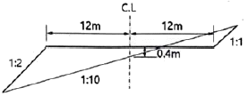
- 10m2
- 16m2
- 18m2
- 24m2
(정답률: 54%)
23. 터널측량에 관한 설명으로 옳지 않은 것은?
- 터널의 중심선 축량은 삼각측량 또는 트래버스 측량으로 행한다.
- 터널 내의 측량에서는 기계의 십자선 또는 표척에 조명이 필요하다.
- 터널 내의 곡선 설치는 일반적으로 편각법을 사용한다.
- 터널측량은 외 측량, 터널 내 측량, 터널 내의 연결측량으로 나눌 수 있다.
(정답률: 62%)
24. 도로의 중심선을 시점 No.0에서 No.7까지 20m씩 종단측량 결과의 일부가 표와 같다. 도로 계획선의 기울기가 상향 1/100이고 No.4에서 지반고와 계획고가 같다고 할 때, No.3의 성토고(A)와 No.5의 절토고(B)는?
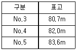
- A=1.1m, B=1.4m
- A=1.1m, B=1.8m
- A=1.5m, B=1.4m
- A=1.5m, B=1.8m
(정답률: 49%)
25. 하천측량에서 평균유속(Vm)을 3점법으로 구하고자 할 때의 공식으로 옳은 것은? (단, V0.2, V0.4, V0.6, V0.8=수면에서 수심의 20%, 40%, 60%, 80%인 곳의 유속)
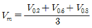
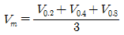
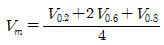
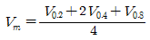
(정답률: 64%)
26. 터널측량에서 터널 외 지표중심선 측량방법과 직접적인 관련이 없는 것은?
- 토털스테이션에 의한 직접측량법
- 트래버스 측량에 의한 방법
- 삼각측량에 의한 방법
- 레벨에 의한 방법
(정답률: 53%)
27. 하천의 수위를 관측하기 위한 관측지접 선정 조건으로 옳지 않은 것은?
- 하저의 변화가 적은 지점
- 하상변화가 작고 상ㆍ하류가 약 100m~200m정도가 직선인 지점
- 평시나 홍수 시에도 관측이 편리한 지점
- 지천에 의한 특별한 수위 변화가 뚜렷한 지점
(정답률: 68%)
28. 완화곡선에 대한 설명으로 틀린 것은?
- 완화곡선의 접선은 종점에서 원호에 접한다.
- 원곡선과 직선부 사이에 넣는 곡선이다.
- 완화곡선의 반지름은 시점에서 0이고, 증가하여 일정한 값이 된다.
- 완화곡선의 종류는 클로소이드, 3차 포물선, 렘니스케이트곡선 등이 있다.
(정답률: 51%)
29. 도로의 단곡선 설치에 대한 설명으로 옳지 않은 것은?
- 접선에 대한 지거법은 각관측을 하지 않고 줄자를 사용하여 설치하는 방법이다.
- 중앙종거법은 중심말뚝 20m 간격으로 설치할 수 없는 방법이다.
- 곡선의 최소 반지름 및 최소 곡선길이의 결정은 도로의 설계속도 및 지형여건에 따라 주로 결정된다.
- 접선편거와 현편거에 의한 설치법은 줄자를 사용하지 않고 각관측으로 설치할 수 있는 방법이다.
(정답률: 33%)
30. 그림과 같은 삼각형 토지에서 BC=55m 위의 점 D와 AC=40m 위의 점 E를 연결하여 △ABC의 면적을 2등분할 때 AE의 길이는?
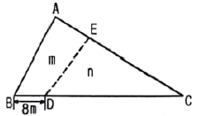
- 16.6m
- 17.7m
- 20.8m
- 23.4m
(정답률: 48%)
31. 수로측량의 기준에 대한 설명으로 틀린 것은?
- 수심은 기본수준면으로부터의 깊이로 표시한다.
- 교량 및 가공선의 높이는 약최저저조면 부터의 높이로 표시한다.
- 노출암, 표고 및 지형은 평균해면부터의 높이로 표시한다.
- 좌표계는 세계측지계를 사용한다.
(정답률: 59%)
32. 얕은 하천에서 표면유속이 0.8m3/s, 하천의 단면적이 16m2일 때, 유량은?
- 12.80m3/s
- 10.24m3/s
- 20.00m3/s
- 11.52m3/s
(정답률: 20%)
33. 그림과 같은 지역의 계획 표고를 35m로 할 때 절토량은? (단, 단위는 m이고, 각 구역의 크기는 10m×10m로 동일하다.)
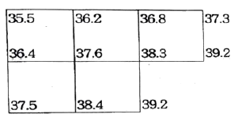
- 1240m3
- 1140m3
- 1040m3
- 940m3
(정답률: 50%)
34. 단면에 의한 체적 계산 방법에 대한 설명으로 틀린 것은?
- 양단면평균법은 간편하기 때문에 실제 토공량 산정에 자주 이용되고 있다.
- 중앙단면법은 단면적의 변화가 크지 않은 경우에 중앙의 단면을 평균 단면으로 가정하는 방법이다.
- 각주공식에 의한 체적산정은 심프슨 제1법칙을 적용하여 전토량을 구한다.
- 일반적으로 토공량 산정값을 비교하면 체적의 크기가 중앙단면법＞각주공식＞양단면평균법의 순서가 된다.
(정답률: 53%)
35. 터널의 시점의 좌표가 P(1200m, 800m, 75m), 종점의 좌표가 Q(1600m, 600m, 100m)일 때 P로부터 Q로 터널을 굴진할 경우에 경사각은?
- 2°11‘19“
- 2°13’19”
- 2°53‘59“
- 3°11’59”
(정답률: 34%)
36. 노선측량에서 도로 종단면도에 표시되는 사항이 아닌 것은?
- 관측점의 위치
- 계획선의 경사
- 절토면적, 성토면적
- 관측점에서의 계획고
(정답률: 52%)
37. 그림과 같은 교각 60°, 곡선반지름 200m인 구원곡선의 교점 P를 제1점선의 방향으로 30m 이동(P→P’)하고, 교각 크기의 B,C위치는 이동이 없이 새로운 원곡선을 설치할 경우 반지름 R’은?
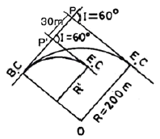
- 85.47m
- 115.47m
- 125.00m
- 148.04m
(정답률: 34%)
38. 교각 I=90°, 곡선반지름 R=150m인 단곡선의 교점(I.P.)까지 추가거리가 1125.5m일 때 곡선시점(B.C)까지의 추가거리는?
- 775.5m
- 865.5m
- 975.5m
- 1065.5m
(정답률: 46%)
39. 시설물 측량의 교량측정에서 말뚝설치측량, 우물통설치측량, 형틀설치측량을 무엇이라 하는가?
- 기준점측량
- 상부구조물측량
- 하부구조물측량
- 유지관리측량
(정답률: 50%)
40. 하천측량에서 합류점, 분류점이나 만곡이 심한 장소로 높은 정확도가 요구되는 곳의 삼각망 구성으로 가장 좋은 것은?
- 유심삼각망
- 사변형삼각망
- 단열삼각망
- 단삼각망
(정답률: 61%)
3과목: 사진측량 및 원격탐사
41. 축척 1:20000의 항공사진을 150km/h의 속도로 촬영하였다. 이 때 노출시간이 1/200초 였다면 사진 상의 흔들림량은?
- 0.009mm
- 0.010mm
- 0.012mm
- 0.013mm
(정답률: 48%)
42. GPS/INS 통합시스템에 대한 설명으로 옳은 것은?
- GPS/INS를 이용하면 항공기에서 중력이상을 측정할 수 있다.
- GPS/INS는 항공기에서 중력이상을 측정할 수 있다.
- GPS/INS는 항공기에서 직접 수치표고모델을 생성하는 장비이다.
- GPS/INS를 이용하면 항공사진측량에서 지상기준점측량 비용을 절감할 수 있다.
(정답률: 49%)
43. 초점거리 150mm 카메라로 촬영고도 1800m, 촬영기선장 960m로 연직촬영한 입체모델이 있다. A점의 시차를 관측한 결과 기준면(표고 0m)이 시차보다 10mm 더 크게 관측되었다면, 엄밀계산법으로 구한 A점의 표고는?
- 150m
- 175m
- 200m
- 225m
(정답률: 24%)
44. 촬영고도가 3000m의 비행기에서 초점거리가 15cm인 카메라로 촬영한 연직항공 사진에서 길이 100m인 교량이 길이는?
- 2.5mm
- 3.0mm
- 3.5mm
- 5.0mm
(정답률: 43%)
45. 위성영상에서 취득하여 보정처리 된 개별영상을 하나의 영상으로 합치는 과정을 설명한 용어로 옳은 것은?
- 영상 모자이크(Image Mosaic)
- 영상 융합(Image Fusion)
- 공간 필터링(Spatial Fitering)
- 영상 해상도 융합(Image Resoultion Merge)
(정답률: 47%)
46. 표정점 선정시 특히 유의해야 할 사항으로 옳지 않은 것은?
- 사진 상에 명확하게 볼 수 있는 점이어야 한다.
- 상공에서 잘 볼 수 있고 평탄한 곳의 점이 좋다.
- 상공에서 잘 볼 수 만 있다면 측선을 연장한 가상점(假想点)이 좋다.
- 수애선과 같이 시간적으로 변화하는 점은 피해야 한다.
(정답률: 67%)
47. 사진측량에서 모델의 의미로 옳은 것은?
- 편위 수정된 사진이다.
- 촬영된 한 장의 사진이다.
- 한 쌍의 사진으로 실체시 되는 부분이다.
- 어느 지역을 대표할 만한 사진이다.
(정답률: 60%)
48. 상호표정 요소를 해석적인 방법으로 구할 때 종시차 방정식의 관측값으로 필요한 자료는?
- 공액점의 y 좌표
- 공액점의 x 좌표
- 연직점의 z 좌표
- 연직점의 x 좌표
(정답률: 55%)
49. 원격탐사의 일반적인 영상처리 순서로 옳게 나열된 것은?
- 데이터 입력→변환처리→전처리→분류처리→출력
- 데이터 입력→전처리→변환처리→분류처리→출력
- 데이터 입력→분류처리→변환처리→전처리→출력
- 데이터 입력→분류처리→전처리→변환처리→출력
(정답률: 53%)
50. 모델좌표계를 지상좌표계로 변환하는 표정은 무엇이며, 이 때 필요한 좌표는?
- 상호표정 – 지상기준점 좌표
- 상호표정 – 공액점 좌표
- 절대표정 – 지상기준점 좌표
- 절대표정 – 공액점 좌표
(정답률: 45%)
51. 다음의 ( )에 알맞은 것은?
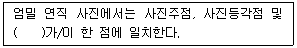
- 사진지표(fiducial mark)
- 사진연직점(nadir point)
- 지상기준점(ground contgrol point)
- 노출중심점(perspective center)
(정답률: 60%)
52. 2010년에 우리나라에서 개발하여 발사한 천리안위성(COMS)의 임무로 거리가 먼 것은?
- 통신중계
- 선박감시
- 해양관측
- 기상관측
(정답률: 53%)
53. 다음 ( )안에 알맞은 말로 짝지어진 것은?
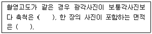
- 크고, 작다
- 크고, 크다
- 작고, 작다
- 작고, 크다
(정답률: 54%)
54. 항공사진 또는 위성영상의 기하보정 과정에서 최종 결과영상을 제작하는데 필요한 재배열(resampling) 방법 중 원천영상자료의 화소값의 변경을 방지할 수 있고 가장 계산이 빠른 방법은?
- Non-linear Interpolation
- Bilinear Interpolation
- Bicubic Interpolation
- Nearest-neighbor Interpolation
(정답률: 47%)
55. 입체감을 얻기 위한 입체사진의 조건에 대한 설명으로 옳은 것은?
- 모델형성을 위한 2장의 사진에서 사진축척이 서로 다른 것이 오히려 입체시가 양호하다.
- 기선고도비는 1에 가까울수록 좋다.
- 한 쌍의 사진을 촬영한 카메라의 광축은 거의 동일평면에 있어야 한다.
- 2장의 사진에서 척척차가 10% 정도일 때 가장 효과적인 결과를 얻을 수 있다.
(정답률: 46%)
56. 영역기준 영상정합시 기준영역에 대한 탐색영역의 크기를 줄이기 위해 사용하는 공액점의 제약요소로 가장 적합한 것은?
- 에필폴라 기하
- 최소제곱 조정
- 교차 상관계수
- 신경망 지수
(정답률: 47%)
57. 다음 중 탑재된 센서로 경사관측이 불가능한 위성은?
- SPOT 위성
- KOMPSAT 위성
- IRS 위성
- Landsat 위성
(정답률: 45%)
58. 정사투영 사진지도의 특징으로 틀린 것은?
- 일반 사진과 동일한 투영법으로 생성된다.
- 사진을 수치형상모형에 투영하여 생성한다.
- 지도와 동일한 좌표체계를 갖는다.
- 지표면의 비고에 의한 변위가 새겨져있다.
(정답률: 27%)
59. 수동적 감지기(passive sensor)중 지표로부터 반사되는 전자기파를 렌즈와 반사경으로 집광하여 필터를 통해 분광한 다음 파장별로 구분하여 각각의 영상을 기록하는 감지기는?
- INS
- MSS
- PAN
- SAR
(정답률: 60%)
60. 초점거리가 15mm인 카메라로 비행고도 3000m에서 촬영한 엄밀수직 항공사진이 있다. 종종복도(overlap)가 60%일 때 한 모델의 유효면적은? (단, 23cm×23cm의 광각 사진이다.)
- 8.46km2
- 15.46km2
- 18.56km2
- 33.86km2
(정답률: 47%)
4과목: 지리정보시스템
61. 메타데이터에 대한 설명 중 옳지 않은 것은?
- 공간자료 호환을 위한 표준 포맷을 의미한다.
- 데이터에 대한 특성과 내용을 설명한다.
- 데이터의 검색을 위한 참조자료로 이용된다.
- 지리정보시스템(GIS) 자료의 원활한 공급과 활용을 위해 필요하다.
(정답률: 53%)
62. 사물인터넷(internet of things)의 정의로 가장 적합한 것은?
- 인공지능 컴퓨터와 로봇에 의하여 사람의 노동력이 최소화 될 수 있도록 하는 기술이나 환경
- 시간과 장소에 구애받지 않고, 언제 어디서나 원하는 정보에 접근할 수 있는 기술이나 환경
- 세상에 존재하는 유형 혹은 무형의 객체들이 다양한 방식으로 서로 연결되어 새로운 서비스를 제공하는 기술이나 환경
- GNSS와 GIS를 결합하여 4차원 정보관리를 할 수 있는 기술이나 환경
(정답률: 40%)
63. 도로명 또는 우편번호와 같은 GIS 데이터를 이용하여 경위도 또는 X,Y등과 같은 좌표로 변환하는 것을 무엇이라고 하는가?
- Geocoding
- GeoVisualization
- Address Matching
- Dynamic Segmentation
(정답률: 51%)
64. 지리정보시스템(GIS)의 특징에 대한 설명으로 옳지 않은 것은?
- 동적인 공간자료 분석이 가능하다.
- 공간데이터와 속성데이터로 구분할 수 있다.
- 속성데이터는 점, 선, 면의 유형으로 분류된다.
- 공간적 위상관계를 이용한 분석이 가능하다.
(정답률: 50%)
65. 종이지도로부터 지리정보시스템(GIS) 데이터베이스에 저장될 자료를 생성하려한다. 종이지도가 컴퓨터로 편집 가능한 영상으로 변환되는 단계는?
- 스캐닝
- 벡터 변화
- 구조화 편집
- 정위치 편집
(정답률: 48%)
66. 도시계획 레이어와 행정구역 레이어를 중첩분석하여 행정구역 별 도시계획과 같은 결과를 얻었을 때 결과 테이블로 옳은 것은?
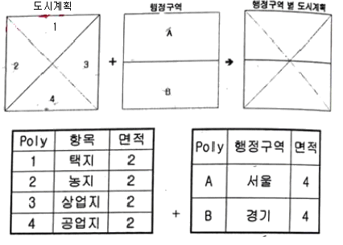
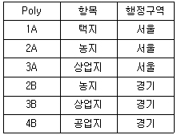
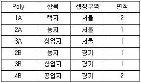
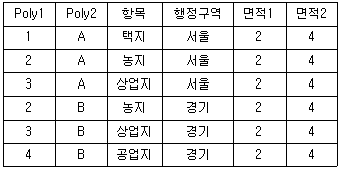
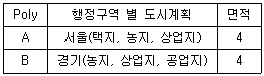
(정답률: 46%)
67. 그림과 같은 A 벡터 레이어에서 B 벡터레이어를 만들었다면 공간연산 기법으로 옳은 것은?
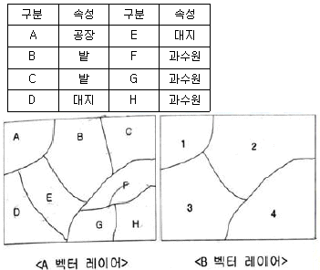
- reclassify
- dissolve
- intersection
- buffer
(정답률: 48%)
68. 부울(Boolean)연산을 이용한 지리 속성정보의 추출 방법이 아닌 것은?
- A and B
- A not B
- A xor B
- A xnot B
(정답률: 52%)
69. 지리정보시스템(GIS)의 데이터베이스구축에 대한 설명으로 틀린 것은?
- 자료 구축을 위해 각종 도면이나 대장, 보고서 등을 활용할 수 있다.
- 위성영상 및 스캐닝한 도면에서 얻어진 자료를 이용하여 구축할 수 있다.
- 수치지도는 래스터방식보다 벡터방식이 적합하다.
- 자료 구축의 해상력 측면에서는 벡터방식보다 래스터방식이 적합하다.
(정답률: 46%)
70. 토목 현장의 공사를 위한 토공량 계산, 사면안정성 분석, 경관 분석 등과 관련된 분석 기법이 아닌 것은?
- 지형 분석
- 경사 분석
- 가시권 분석
- 도시성장 패턴 분석
(정답률: 62%)
71. 격자(Raster) 자료 구조에 대한 설명으로 옳은 것은?
- 격자의 크기보다 작은 객체의 표현도 가능하다.
- 격자의 크기가 작을수록 객체의 형태를 자세히 나타낼 수 있다.
- 격자의 크기가 클수록 표현되는 자료는 보다 상세한 반면, 저장용량은 증가한다.
- 격자의 크기가 작아지면 이에 비례하여 자료의 양이 감소한다.
(정답률: 50%)
72. 표와같은 위상구조 테이블에 적합한 데이터는?
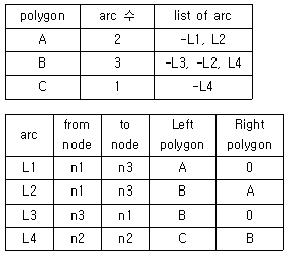
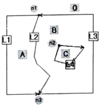
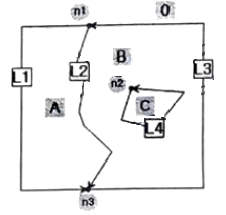
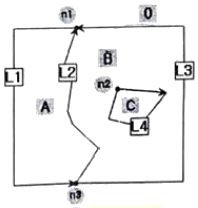
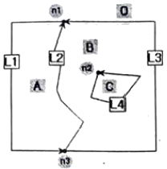
(정답률: 52%)
73. ＜입력 값＞을 이용하여 ＜출력결과＞를 얻기 위한 비교연산자로 옳은 것은?
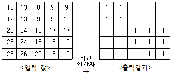
- (입력 값＞=10) and (입력 값＜=20)
- (입력 값＞=10) or (입력 값＜=20)
- (입력 값＞10) and (입력 값＜20)
- (입력 값＞10) or (입력 값 ＜20)
(정답률: 40%)
74. 지리정보시스템(GIS) 자료관리의 특징으로 볼 수 없는 것은?
- 대량의 정보를 저장하고 관리할 수 있다.
- 원하는 정보를 쉽게 찾아볼 수 있고, 새로운 정보의 추가, 수정이 용이하다.
- 사용되는 도형자료는 자료의 길이가 일정하다.
- 필요한 자료의 중첩을 통하여 종합적 정보의 획득이 가능하다.
(정답률: 57%)
75. 수치지형모델을 구축하기 위한 자료취득 방법 중 표본추출방식에 대한 설명으로 옳지 않은 것은?
- 임의 방식: 지형이 넓은 경우 효과적이며, 빠르게 자료를 얻을 수 있는 방법이다.
- 등고선 방식: 기존의 지형도를 사용하여 자료를 추출하는 경우 효과적인 방법이다.
- 단면 방식: 지형을 등간격으로 나누어 각 단면상의 지형점을 추출하는 방식이다.
- 대상 mesh 방식: 도로의 등거리 점에서 직교하는 단면이 모여 지형을 근사화시키는 경우 사용하는 방식이다.
(정답률: 33%)
76. 벡터 테이터 중 아크(호)들의 연결인 체인에 있어서 아크의 중간에 위치하며 체인에서 방향이 바뀌는 지점을 나타내는 것으로써 체인상에서 좌표 라벨을 부여받은 점의 명칭은?
- 레이어(Layer)
- 커버리지(Coverage)
- 노드(Node)
- 버텍스(Vertex)
(정답률: 47%)
77. 관계형 데이터베이스의 관계 스키마(relational schema)에 표현되지 않는 것은?
- 레코드(records)
- 키(key)
- 관계명(relational names)
- 속성명(attribute names)
(정답률: 37%)
78. 쉐이프파일(shapefile)의 필수 파일이 아닌 것은?
- *.shp
- *.sbn
- *.shx
- *.dbf
(정답률: 50%)
79. 경사분석에서의 경사를 경사각(°)과 경사율(%)로 표현할 때, 그림에 대한 경사로 옳은 것은?
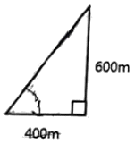
- 경사각 약 34°, 경사율 약 67%
- 경사각 약 34°, 경사율 약 150%
- 경사각 약 56°, 경사율 약 67%
- 경사각 약 56°, 경사율 약 150%
(정답률: 46%)
80. 레스터 데이터의 압축 기법 중 어떤 기체의 경계선을 그 시작점에서부터 동서남북방향으로 이동하는 단위 벡터를 사용하여 표현하는 방법은?
- 사지수형 기법
- 블록 코드 기법
- 체인 코드 기법
- Run-length 코드 기법
(정답률: 42%)
5과목: 측량학
81. 해안, 해도의 높이를 표시하는데 주로 사용하는 방법으로 임의의 점의 표고를 숫자로 도상에 나타내는 방법은?
- 음영법
- 점고법
- 영선법
- 등고선법
(정답률: 62%)
82. 각 관측 기기의 조정조건으로 옳지 않은 것은?
- 기포관축이 수직축에 수평이어야 한다.
- 시준축은 수평축에 직교하여야 한다.
- 수평축은 연직축에 직교하여야 한다.
- 망원경의 위치가 회전축에 편심되지 않아야 한다.
(정답률: 41%)
83. 그림에서 교각 ∠A, ∠B, ∠C, ∠D의 크기가 다음과 같을 때 cd측선의 방위각은?
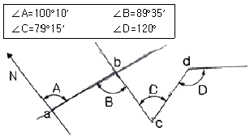
- 00°10’
- 89°50’
- 180°10’
- 269°50’
(정답률: 48%)
84. 거리측정에서 줄자로 한번 측정할 때의 오차가 ±0.01m이다. 450m의 거리를 50m 줄자로 9회로 나누어 측정했을 때 오차는?
- ±0.07m
- ±0.09m
- ±0.⑤m
- ±0.03m
(정답률: 40%)
85. 다음 표척의 읽음값으로 옳은 것은?
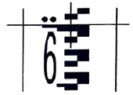
- 2.6m
- 2.7m
- 6.0m
- 6.5m
(정답률: 42%)
86. 1회 거리측정에서의 정오차가 ε이라고 하면 같은 조건에서 같은 기긱로 4회 측정하였을 경우에 생기는 정오차의 크기는?
- ε
- 2ε
- 4ε
- 16ε
(정답률: 52%)
87. A의 좌표(X1,Y1)가 (-2000m, 1000m)이고, B까지의 거리가 1500m, AB의 방위각이 60°이었다면 B의 좌표는?
- (-1250m, 2299m)
- (-701m, 1750m)
- (-2299m, 1250m)
- (-1750m, 701m)
(정답률: 44%)
88. 표고가 118m와 145m인 두 점 사이의 수평거리가 250m이며 등경사지일 때, 130m 등고선이 통과하는 지점과 118m 표고점의 수평거리는?
- 9.9m
- 102m
- 1⑤m
- 111m
(정답률: 50%)
89. 평균거리 2km에 대한 삼각측량에서 시준점의 편심에 대한 영향이 11“일 경우에 이에 의한 편심거리는?
- 약0.11m
- 약0.22m
- 약0.42m
- 약0.81m
(정답률: 50%)
90. 등고선의 성질에 대한 설명으로 틀린 것은?
- 동일 등고선 위에 있는 모든 점의 높이는 같다.
- 등고선의 간격은 완경사지에서 좁고, 급경사지에서는 넓다.
- 등고선은 도면 안 또는 밖에서 폐합하며 도중에서 소실되지 않는다.
- 등고선이 도면 내에서 폐합하는 경우 등고선의 내부에는 산정이나 분지가 있다.
(정답률: 58%)
91. 광파거리측량기에 대한 설명으로 옳지 않은 것은?
- 광파거리측량기는 줄자에 비하여 기복이 많은 지역의 거리관측에 유리하다.
- 광파거리측량기의 변조주파수의 변화에 따라 생기는 오차는 관측거리에 비례한다.
- 광파거리측량기의 변조파장이 긴 것이 짧은 것에 비하여 정확도가 높다.
- 광파거리측량기의 정수는 비교기선장에서 비교측량하여 구한다.
(정답률: 48%)
92. 시준거리 30m에 대하여 표척눈금 읽음값의 차가 1.5cm, 기포의 이동거리가 0.2cm라면 기포관의 곡률반지름은?
- 2.0m
- 3.0m
- 4.0m
- 6.0m
(정답률: 34%)
93. 삼각 및 삼변측량에 대한 설명으로 옳지 않은 것은?
- 삼각망의 조건식수는 삼변망의 조건식수보다 많다.
- 삼변측량의 계산에는 코사인(cos) 제2법칙을 사용한다.
- 삼각망의 조정시 필요한 조건으로 측점조건, 각조건, 변조건 등이 있다.
- 기하학적 도형조건으로 인해 삼변측량은 삼각측량 방법을 완전히 대신할 수 있다.
(정답률: 55%)
94. 그림과 같이 관측된 거리를 최소제곱법으로 조정하기 위한 관측방정식을 행렬로 표시한 것으로 옳은 것은?
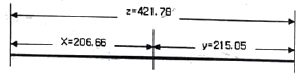
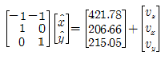
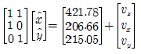
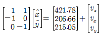
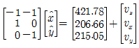
(정답률: 43%)
95. 공공측량성과의 고시는 최종성과를 얻은 날로부터 며칠 이내에 하여야 하는가?
- 3일
- 15일
- 30일
- 60일
(정답률: 42%)
96. 국토교통부장관이 일반측량을 한 자에게 그 측량성과 및 측량기록의 사본을 제출하게 할 수 있는 경우의 해당 목적이 아닌 것은?
- 측량의 중복 배제
- 측량의 보안 유지
- 측량의 정확도 확보
- 측량에 관한 자료의 수집ㆍ분석
(정답률: 53%)
97. 심사를 받지 않고 지도 등을 간행하여 판매하거나 배포한 자에 대한 벌칙기준은?
- 3년 이하의 징역 또는 3천만원 이하의 벌금
- 2년 이하의 징역 또는 2천만원 이하의 벌금
- 1년 이하의 징역 또는 1천만원 이하의 벌금
- 300만원 이하의 과태료
(정답률: 33%)
98. 측량업의 종류로 옳지 않은 것은?
- 지하시설물측량업
- 공간영상도화업
- 연안조사측량업
- 영상지도제작업
(정답률: 34%)
99. 공간정보의 구축 및 관리 등에 관한 법률에서 규정하는 수치주제도에 속하지 않는 것은?
- 수치지적도
- 지하시설물도
- 토지피복지도
- 행정구역도
(정답률: 41%)
100. 측량의 기준에 관한 설명으로 틀린 것은?
- 위치는 세계측지계로 표시한다.
- 측량의 원점은 대한민국 경위도 원점 및 수준원점으로 한다.
- 지도제작을 위하여 필요한 경우에는 직각좌표와 높이로 표시할 수 있다.
- 독도를 제외한 우리나라 전 지역은 동일한 측량 원점을 사용한다.
(정답률: 57%)
1/108 x 2πR ≈ 2.0km
따라서, 거리 측량 정밀도를 1/108까지 허용할 때 지구 표면을 평면으로 고려할 수 있는 거리의 한계는 약 2km이다.